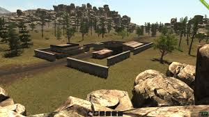

Welcome to Villanious Games INC.! Here we make high quality first person games for both the loner and clansmen. We are lax with our rules and enforce a proper anti-cheat effectively. We are professional coders and artists bringing you oftenly updated projects and games for a majestically low prices.
This is World Divided, a First-Third person MMORPG for players to not only test thier roleplay skills but also life skills like econmics, planning, and following directions. This game does not contain any sort of pay to win features and only costs 10$ USD a Month to keep your account Vaildated.

This is World Divided 2, A futher in-depth First-Third person MMORPG for players to not only test thier roleplay skills but also life skills like econmics, planning, and following directions. This game does not contain any sort of pay to win features and only costs 10$ USD a Month to keep your account Vaildated. This game requires more devotion than World Divided 1 and is designed for players who want to contine the World Divided Story.
This is World Divided 3, A futher in-depth First-Third person MMORPG for players to not only test thier roleplay skills but also life skills like econmics, planning, and following directions. This game does not contain any sort of pay to win features and only costs 10$ USD a Month to keep your account Vaildated. This game requires more devotion than World Divided 2 and is designed for players who want to contine the World Divided Story.

Extreme Diveristy is a Post-Apocalyptic open world survival game set in a twisted reality, Humanity is lost, a few bands of Nomads and Lone Wolves barely holding thier own. You are stuck in a torn apart world of anarchy, starvation, dehydration, and constant fear of getting your head kicked in by bandits. There are all sorts of Thugs, Mutants, and Demons that have leaked them selves into the world, ruining any hope of restoration. You can write your story, your own attempt at making something from nothing when in the end, there is no hope.
List Price: $20.00
Distraught is the next level of hell. The game is set in a world utterly comprimised by a demon apocalypse, all sorts of living nightmares roam the now barren earth in search of human souls to reap.
You must band up with the last survivors in your final hope of salvation. Weapons and food are scarce. Take your chances for only $19.99 Do you dare to dance with death?
Mobfish Hunter PC is very similar and very different to Appxplore's orignal game. The game is based in a similar reality, the world is stripped of resources and governments control thier people strictly. The situation is bad enough that even touching the waters of the oceans is completely illegal, Fish consumption is illegal, over 90% of the population is below the poverty line and the police brutailty rate is nearly 100%. New Law Enforcment systems issue public executions for even minor crimes. You are an outlaw, trying to make a decent wage from illict activities, the most profitable: Fishing. You are a fish hunter, illegally collecting fish to feed the hungry and to make a half decent wage. $30.00 for your copy of this game, allthe money goes to Appxplore.